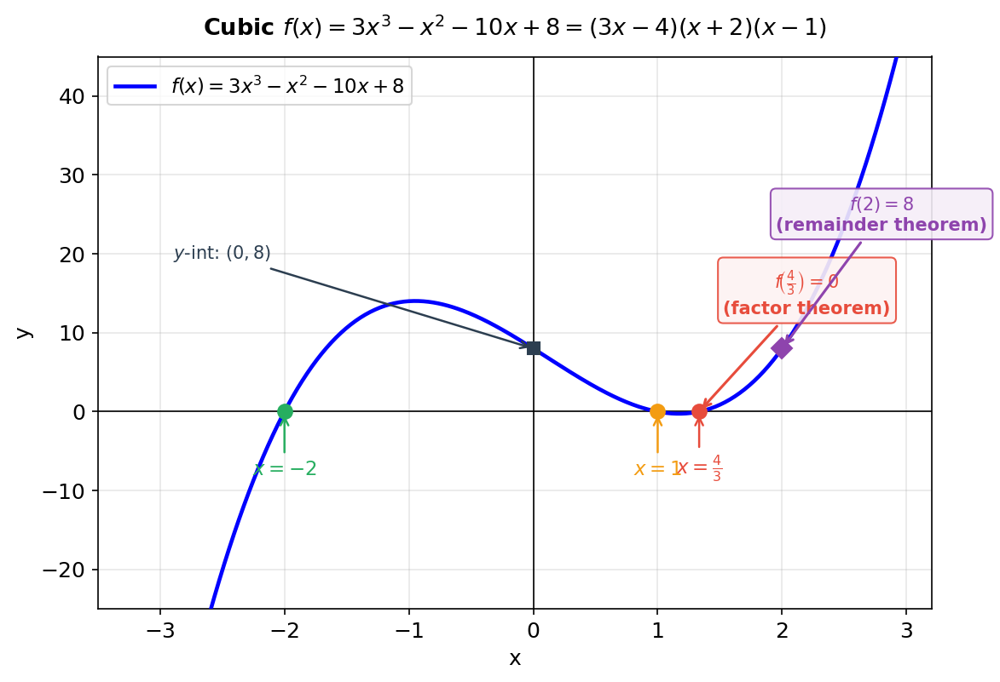

$f(x) = 3x^{3} + ax^{2} - 10x + b$, where $a$ and $b$ are constants.
Given that $(3x - 4)$ is a factor of $f(x)$, and that the remainder when $f(x)$ is divided by $(x - 2)$ is $8$,
(a) find the value of $a$ and the value of $b$, [4]
(b) hence factorise $f(x)$ completely. [3]
[7 marks]

Strategy. “$(3x-4)$ is a factor” ⇒ factor theorem: $f(b/a) = 0$ where the factor is $(ax-b)$. Here $a=3, b=4$, so evaluate at $x = 4/3$.
Apply factor theorem
$$f\!\left(\frac{4}{3}\right) = 0:$$$$3\!\left(\frac{4}{3}\right)^{3} + a\!\left(\frac{4}{3}\right)^{2} - 10\!\left(\frac{4}{3}\right) + b = 0.$$
Strategy. “Remainder on dividing by $(x-2)$ is $8$” ⇒ remainder theorem: $f(c) = R$. Here $c = 2, R = 8$.
Apply remainder theorem
$$f(2) = 8:$$$$3(2)^{3} + a(2)^{2} - 10(2) + b = 8$$
$$24 + 4a - 20 + b = 8 \quad\Longrightarrow\quad 4a + b = 4.$$
Strategy. Expand $f(4/3)=0$ to get a second equation in $a, b$, then solve simultaneously with $4a + b = 4$.
Expand f(4/3)=0
$$3\cdot\frac{64}{27} + a\cdot\frac{16}{9} - \frac{40}{3} + b = 0$$$$\frac{64}{9} + \frac{16a}{9} - \frac{40}{3} + b = 0$$
Multiply by 9: $64 + 16a - 120 + 9b = 0 \Rightarrow 16a + 9b = 56$.
Solve simultaneously
From $4a + b = 4$: $b = 4 - 4a$. Substitute: $16a + 9(4-4a) = 56 \Rightarrow 16a + 36 - 36a = 56 \Rightarrow -20a = 20$.
$Result: $\boxed{a = -1,\; b = 8}$.
Strategy. With $a=-1, b=8$: $f(x) = 3x^{3} - x^{2} - 10x + 8$. Divide by the known factor $(3x-4)$.
Divide $3x^{3} - x^{2} - 10x + 8$ by $(3x - 4)$
$$3x^{3} \div 3x = x^{2}; \quad x^{2}(3x-4) = 3x^{3} - 4x^{2}.$$
Subtract: $-x^{2} - (-4x^{2}) = -x^{2} + 4x^{2} = +3x^{2}$.
Continue: bring down $-10x$. $3x^{2} \div 3x = x$; $x(3x-4) = 3x^{2} - 4x$. Subtract: $-10x - (-4x) = -6x$. Bring down $8$. $-6x \div 3x = -2$; $-2(3x-4) = -6x + 8$. Remainder $0$ ✓.
$Quotient: $x^{2} + x - 2$.
Strategy. Factorise $x^{2} + x - 2 = (x+2)(x-1)$, then write the complete factorisation.
Fully factorise
$$f(x) = (3x - 4)(x^{2} + x - 2) = (3x - 4)(x + 2)(x - 1).$$Sense check. Roots at $x = 4/3, -2, 1$ — three real roots for a cubic ✓.